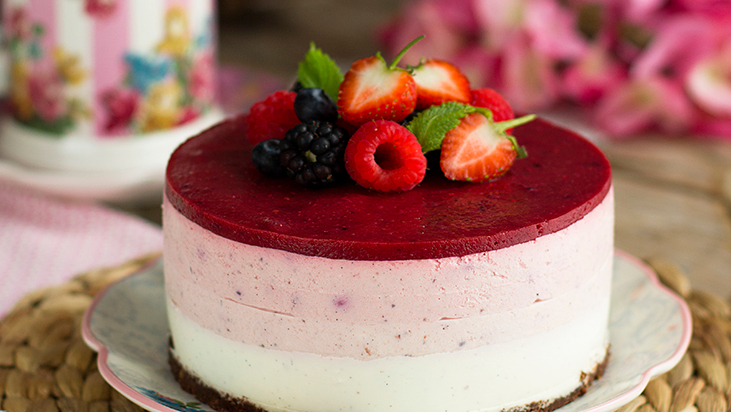

Cheesecake
Ingredientes
- 200 Gramos Galletitas De Vainilla
- 2 Cucharadas Jugo De Limon
- 100 Gramos Manteca Blanda
- 675 Gramos Queso Crema
- 1 Cucharadita Esencia De Vainilla
- 1 1/2 Cucharada Azúcar
- 3 Unidades Huevo
- 1 Paquete Leche Condensada Nestlé
- 1 Pizca Sal
- 1 Taza Frutos Rojos
- 1/2 Taza Salsa De Frambuesas
Intrucciones
- Procesar las galletitas con la manteca blanda, dejar reposar durante media hora y tapizar la base y los bordes de un molde desmontable de 22 cm de diámetro.
- Cocinar en horno precalentado a temperatura media (180 ºC) durante 10 minutos aproximadamente. Retirar y dejar enfriar.
- Para el relleno, batir el queso crema durante un minuto. Añadir el jugo de limón, los huevos, la Leche Condensada Nestlé y la pizca de sal.
- Envolver la parte inferior del molde con papel aluminio, colocar el relleno dentro del molde y volver a cocinar a baño de María en horno precalentado a 150 ºC durante 50 minutos.
- Retirar del horno y dejar enfriar a temperatura ambiente; luego llevar a la heladera.
- Servir acompañado de salsa de frambuesa y frutos rojos.
- Si querés obtener una preparación liviana en grasas, utilizá la leche condensada descremada y reemplazá el queso crema por un queso untable 0 % grasas.